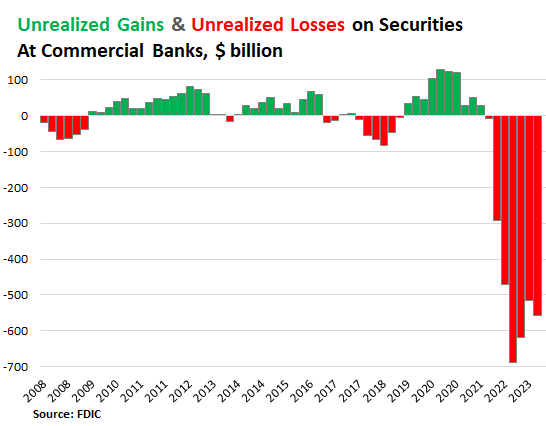
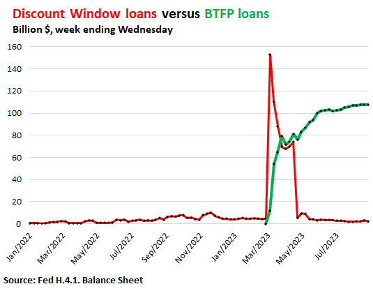
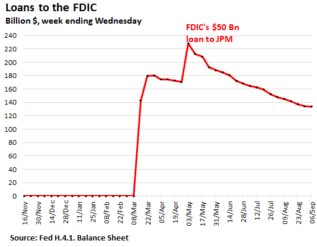

09-14 20:04
很不幸的，雖然博客早自2019年（參見前文《從回購利率暴漲談美國經濟周期》）就明確反復警告濫發美元即將引發通脹危機，因而美聯儲必須改行緊縮措施，人民銀行卻並沒有及時減持美國長期國債和類國債，所以也就必然承受了同比例的“未實現損益”。



這裏讓人困惑的一點，在於中方的教育和金融官員並沒有這類的公開酬傭出路，卻比歐奸還要努力賣命，所以無法用理性思路來完全解釋；換句話説，他們主要不是“壞”，而是“蠢”。然而個別官員腦殘固然難免，整個部門幾十年思想全面坍方、越演越甚，就非常值得深究了。